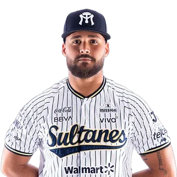
#46Alejandro Castro
Lanzador derecho · Cuba
Nacido en La Habana; subió al equipo grande en mayo. Relevista: 28 juegos y 46 ponches.


#46Lanzador derecho · Cuba
Nacido en La Habana; subió al equipo grande en mayo. Relevista: 28 juegos y 46 ponches.
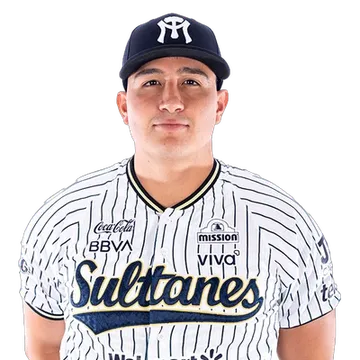
#28Lanzador derecho · México
Relevista: 29 juegos, 0.39 de efectividad y 22 ponches.
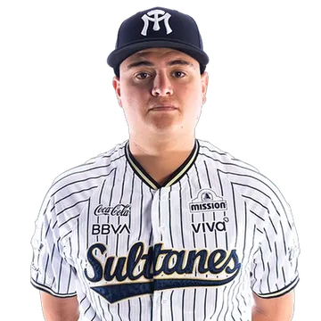
#66Lanzador · México
Abrió 5 de sus 25 juegos: marca de 1-1 y 5.31 de efectividad.
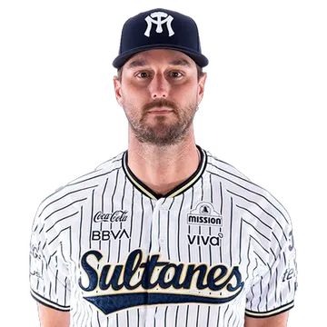
#75Lanzador derecho · Estados Unidos
Cerrador del equipo: 20 salvamentos y 2.79 de efectividad.
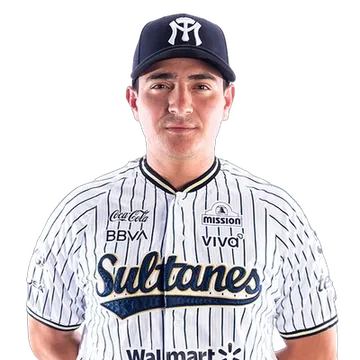
#80Lanzador derecho · México
Abrió 11 de sus 22 juegos: marca de 3-3 y 4.07 de efectividad.
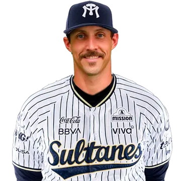
#73Lanzador derecho · Estados Unidos
Abrió 5 juegos con Sultanes (2-2) y 14 con Tecos, donde tuvo 5-1 y 2.31 de efectividad.
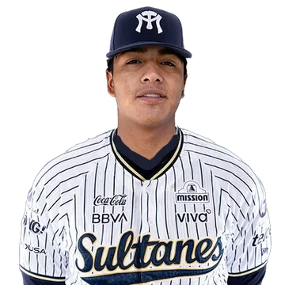
#82Lanzador derecho
El más joven del roster: nació en noviembre de 2005. No lanzó con el equipo grande en la temporada.
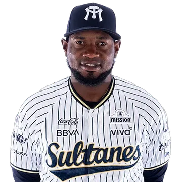
Lanzador zurdo · República Dominicana
Relevista: 34 juegos, 4.88 de efectividad y 24 ponches.
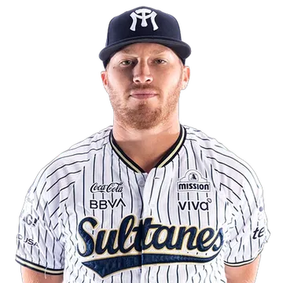
#12Lanzador zurdo · Estados Unidos
Relevista: 18 juegos, 3.68 de efectividad y 19 ponches.
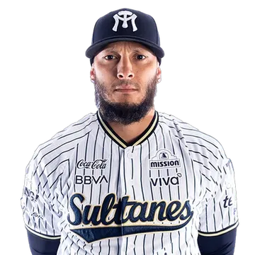
#41Lanzador derecho · Venezuela
Relevista: 15 juegos, 4.73 de efectividad y 9 ponches.
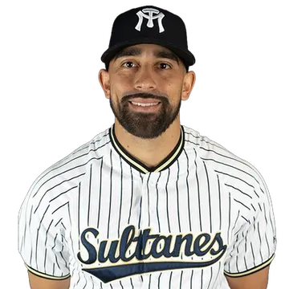
#99Lanzador derecho · Estados Unidos
Relevista: 9 juegos, 7.59 de efectividad y 12 ponches.
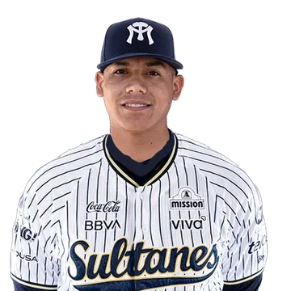
Lanzador derecho · México
Relevista: 7 juegos, 7.53 de efectividad y 14 ponches.
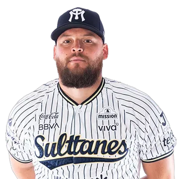
#43Lanzador derecho · Estados Unidos
Relevista: 23 juegos, 9.30 de efectividad y 11 ponches.
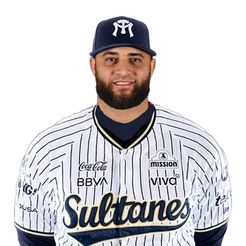
#97Lanzador derecho · República Dominicana
Lanzó en 1 juego (1 entrada).
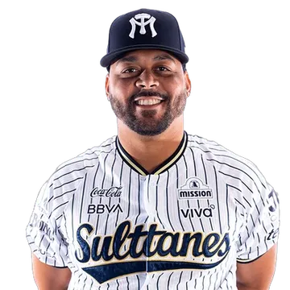
#61Lanzador zurdo · Estados Unidos
Abridor: marca de 5-2, 3.83 de efectividad y 33 ponches en 12 aperturas.
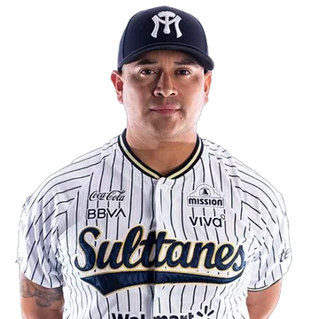
#92Lanzador zurdo · México
Zurdo de la selección mexicana. Sus 7 victorias fueron las más del equipo.
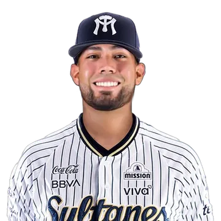
Lanzador derecho · México
Abridor: marca de 1-0, 2.70 de efectividad y 6 ponches en 2 aperturas.
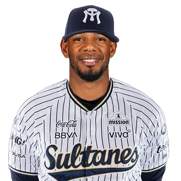
#44Lanzador derecho · República Dominicana
Relevista: 32 juegos, 3.27 de efectividad y 44 ponches.
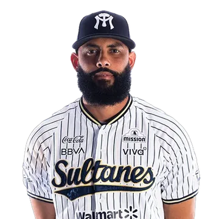
#48Lanzador derecho · República Dominicana
Relevista: 21 juegos, 3.72 de efectividad y 22 ponches.
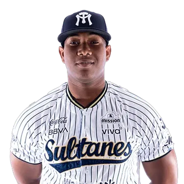
#54Lanzador derecho · República Dominicana
Relevista: 49 juegos, 3.50 de efectividad y 38 ponches.
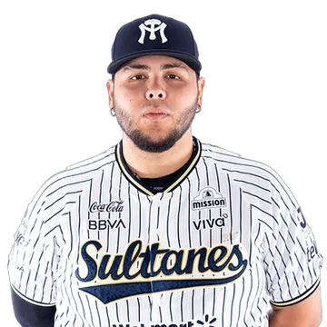
#8Receptor · México
Bateó .235 con 3 jonrones en 26 juegos.
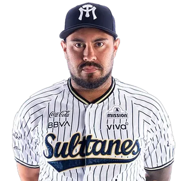
#38Receptor · Venezuela
Receptor con más de 500 juegos en Grandes Ligas. Bateó .358 en 33 juegos.
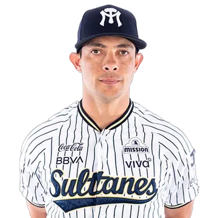
#40Receptor · México
Bateó .167 con 1 jonrón en 10 juegos.
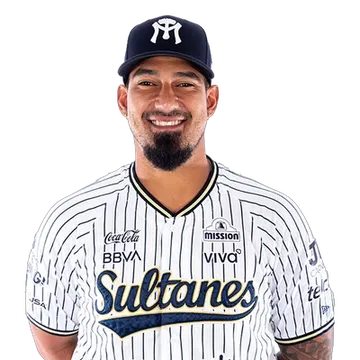
#39Receptor · Venezuela
Bateó .268 con 3 jonrones y 29 producidas en 56 juegos.
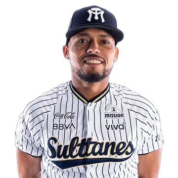
#4Shortstop · República Dominicana
El mejor promedio del equipo (.321), además de 30 bases robadas.
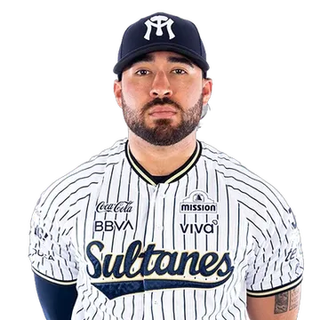
#2Cuadro interior · México
Bateó .245 con 4 jonrones y 24 producidas en 60 juegos.
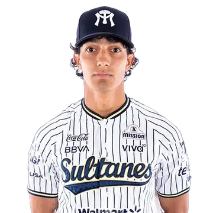
#3Cuadro interior · México
Bateó .195 en 35 juegos.
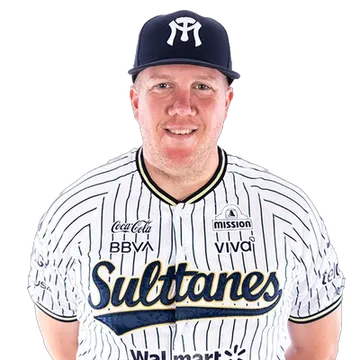
#58Primera base · Estados Unidos
Líder de jonrones del equipo: bateó .290 con 15 y 51 producidas.
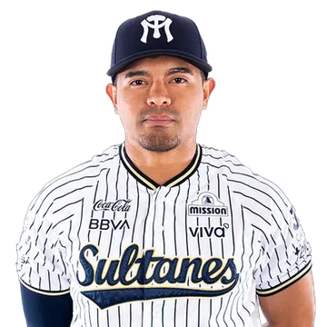
#62Shortstop · México
Bateó .257 con 1 jonrón en 24 juegos.
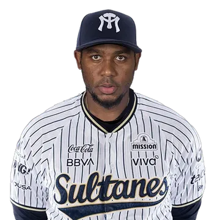
#65Tercera base · República Dominicana
Bateó .272 con 3 jonrones y 15 producidas en 33 juegos.
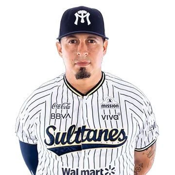
#19Tercera base · México
Veterano con experiencia en Grandes Ligas con los Yankees. Bateó .261 con 6 jonrones.
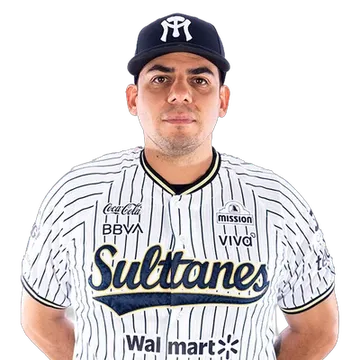
#25Primera base · México
Bateó .289 con 13 jonrones y 67 producidas en 87 juegos.
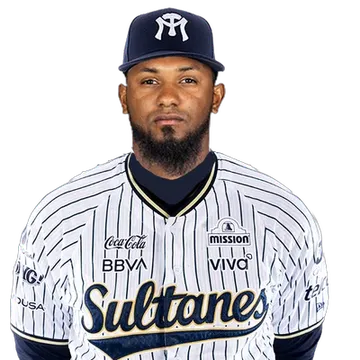
#29Shortstop · Venezuela
Jugó 3 juegos.
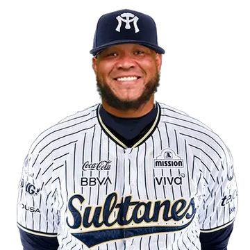
#45Jardín derecho · Colombia
Bateó .411 en 27 juegos con Sultanes; también jugó 66 con Tecos, donde bateó .350.
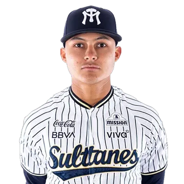
#79Jardinero · México
Participó en 37 juegos.
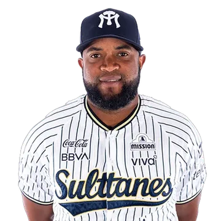
#30Jardín derecho · República Dominicana
Bateó .261 con 8 jonrones y 37 producidas en 91 juegos.